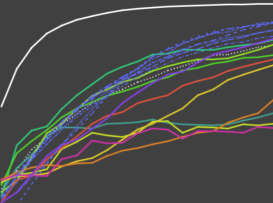

Towards User-Centered Active Learning Algorithms | HCI Stuttgart


Authors. Jürgen Bernard, Matthias Zeppelzauer, Markus Lehmann, Martin Müller, Michael Sedlmair
Venue. CGF (2018)
Abstract. The labeling of data sets is a time-consuming task, which is, however, an important prerequisite for machine learning and visual analytics. Visual-interactive labeling (VIAL) provides users an active role in the process of labeling, with the goal to combine the potentials of humans and machines to make labeling more efficient. Recent experiments showed that users apply different strategies when selecting instances for labeling with visual-interactive interfaces. In this paper, we contribute a systematic quantitative analysis of such user strategies. We identify computational building blocks of user strategies, formalize them, and investigate their potentials for different machine learning tasks in systematic experiments. The core insights of our experiments are as follows. First, we identified that particular user strategies can be used to considerably mitigate the bootstrap (cold start) problem in early labeling phases. Second, we observed that they have the potential to outperform existing active learning strategies in later phases. Third, we analyzed the identified core building blocks, which can serve as the basis for novel selection strategies. Overall, we observed that data-based user strategies (clusters, dense areas) work considerably well in early phases, while model-based user strategies (e.g., class separation) perform better during later phases. The insights gained from this work can be applied to develop novel active learning approaches as well as to better guide users in visual interactive labeling.